mCoreHabit
Your health habit hub.
An aggregator that brings all your habits together in one clear place.
Instead of bouncing between multiple apps to check steps, walking distance, calories, hydration, nutritional intake or sleep, mCoreHabit leverages the data already stored in Apple Health and turns it into a single, easy-to-understand view.
mCoreHabit helps you set meaningful goals on this data. You take the raw numbers from Apple Health and layer on personalized targets that reflect what you want to achieve. The app then helps you measure your progress, stay accountable, celebrate success, and drive real results from the habits you’ve established.
Free to try — only purchase if you’re pleased with it.
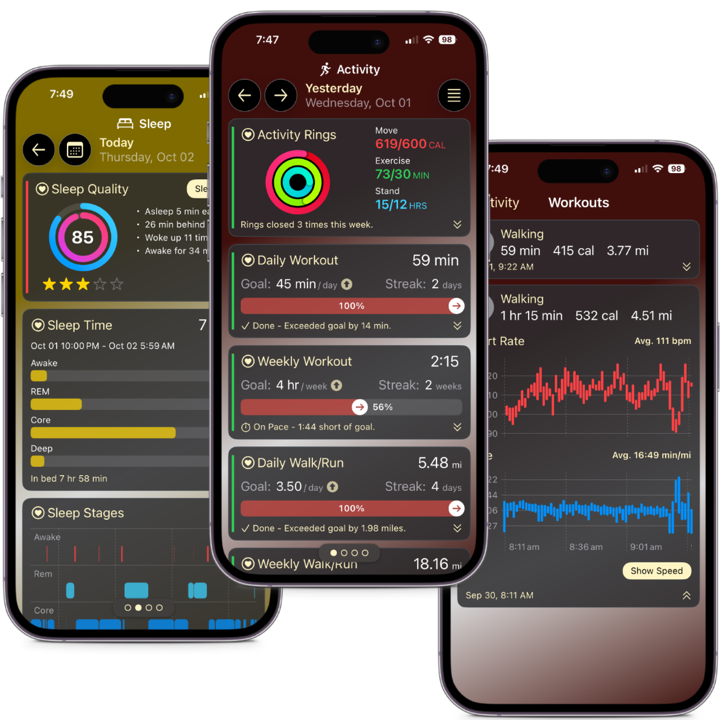
About mCoreHabit
Building healthy habits can feel overwhelming, especially when you’re juggling exercise, nutrition, and everyday life. mCoreHabit makes it simple by bringing all of your efforts into one clear, motivating place. Whether you want to move more, eat better, or simply see how your daily choices are adding up, this app turns your health data into insights that actually make sense.
Instead of drowning in numbers, you’ll see progress through friendly coaching, clean visuals, and easy-to-track habits. You can choose from a library of common activity, nutrition, and results-based habits — or create your own — so the app fits your lifestyle instead of forcing you into someone else’s plan. It’s flexible enough for beginners who just want to drink more water, and powerful enough for fitness enthusiasts who track workouts, macros, and body composition.
Built on a Strong Foundation
mCoreHabit works seamlessly with the data stored in the Apple Health app. Many of the habits in the Habit Library rely on information captured by your iOS device.
Unlike Apple Health, mCoreHabit lets you set specific goals and monitor your progress towards those goals. If you log a habit in mCoreHabit that’s linked to Apple Health, your new data will automatically be saved to Apple Health, making it visible in both apps.
For habits that don’t have a corresponding entry in Apple Health, mCoreHabit stores your data in its own secure, on-device habit database.
Works Well With Others
mCoreHabit isn’t meant to replace the apps you already use — it’s designed to make your health data more useful. Our focus is helping you set meaningful goals and see your progress in a way that actually makes sense.
The app works best alongside tools that are already great at capturing data, such as Apple Health, Foodnoms, MyFitnessPal, Lose It!, My Water Balance, and others. If the apps you use today save information into Apple Health, mCoreHabit can take that data and turn it into actionable insights — helping you track, adjust, and celebrate your progress.
Why Was It Created?
mCoreHabit is built by the same team behind the popular mPaceline app — a trusted Peloton companion that helps riders get deeper insight into their workouts and stay motivated. With mPaceline, we learned how powerful it can be when data is presented in a way that feels clear, personal, and rewarding.
That same philosophy drives mCoreHabit. We’ve always loved data, but more than that, we love turning numbers into proof that your hard work is making a difference. Balancing activity and nutrition can feel overwhelming at times, but having a simple, focused tool to track both makes it easier to stay consistent.
mCoreHabit brings everything together in one place. Whether you’re logging steps, workouts, calories, or progress toward a specific goal, you’ll see your efforts add up day by day and week by week. It’s about connecting the dots between the choices you make and the results you see — so you stay motivated, accountable, and confident that you’re moving in the right direction.
Best Fit For?
mCoreHabit is designed for anyone who wants to take a more intentional approach to their health. It’s not about chasing perfection — it’s about seeing progress, building consistency, and staying motivated.
- Everyday moverswho want to be more active and track steps, workouts, or calories burned.
- Nutrition-minded peoplewho are trying to eat better, stay hydrated, or build awareness around what they consume.
- Goal-setterswho thrive on visual progress — whether that’s hitting weekly workout streaks, staying under a calorie limit, or gradually moving toward a target weight.
- Fitness enthusiastswho already use apps like Apple Health, MyFitnessPal, or Lose It! and want one clear, motivating place to connect the dots.
It gives you a single place to see your progress — day by day and week by week — keeping you motivated and showing that you’re moving steadily toward your goals.
App Usage Advice
Start small, stay consistent, and build momentum — one habit at a time.
Pick the Right Habits
The app comes with a wide range of pre-defined habits — and you can create your own — but that doesn’t mean you need to track everything at once. The key is to be intentional about what you choose to focus on.
If your goal is to improve cardio, start with habits that support endurance and movement. If you’re working on strength, select habits that align with building power and consistency. You can always add more habits later as your goals evolve.
Start small, stay consistent, and build momentum — one habit at a time. Over time, these small wins will compound into meaningful progress on your fitness and nutrition journey.
Set Attainable Goals
Setting the right goals is one of the most important parts of building lasting habits.
A good goal should feel challenging enough to motivate you, but realistic enough that you can stick with it. Instead of aiming for perfection, focus on progress. For example, if you’re new to tracking steps, start with a daily target that’s a little higher than your current average.
Once you are consistently hitting your goal, you can raise the bar. Small, achievable wins build confidence and momentum.
Sample App Screens
A quick look at mCoreHabit on iPhone.
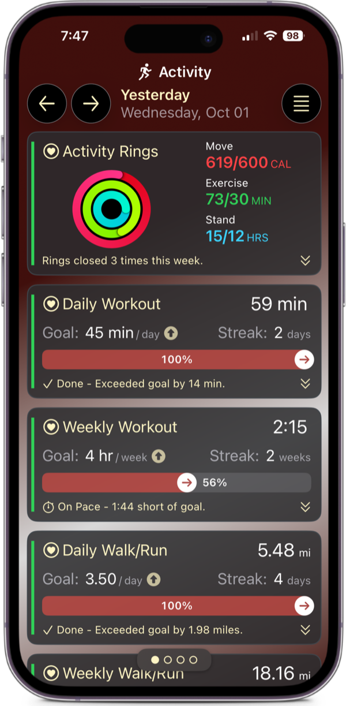
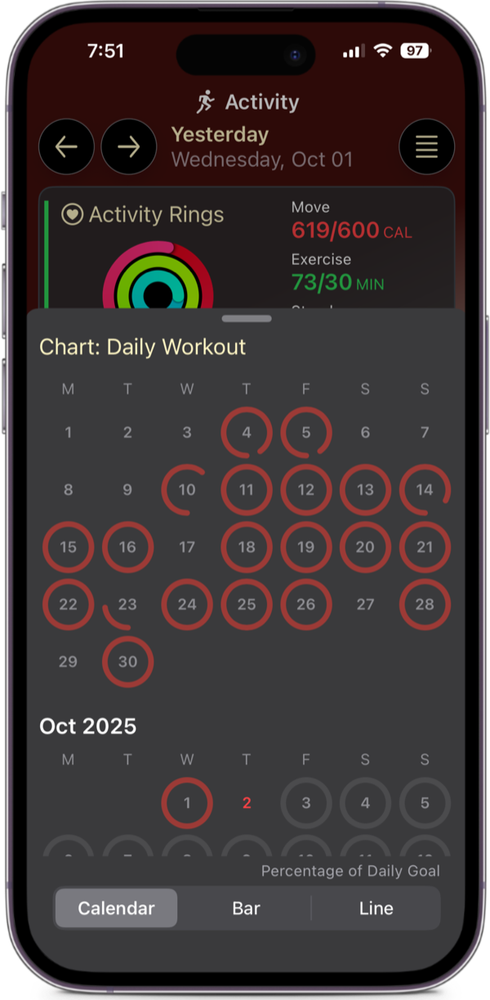
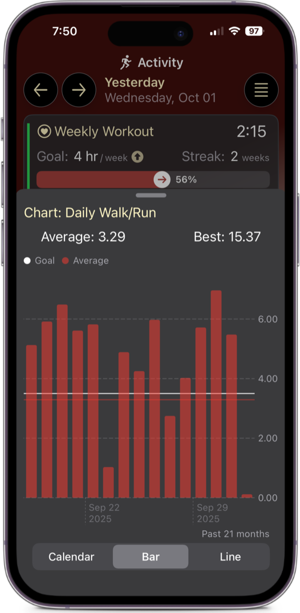
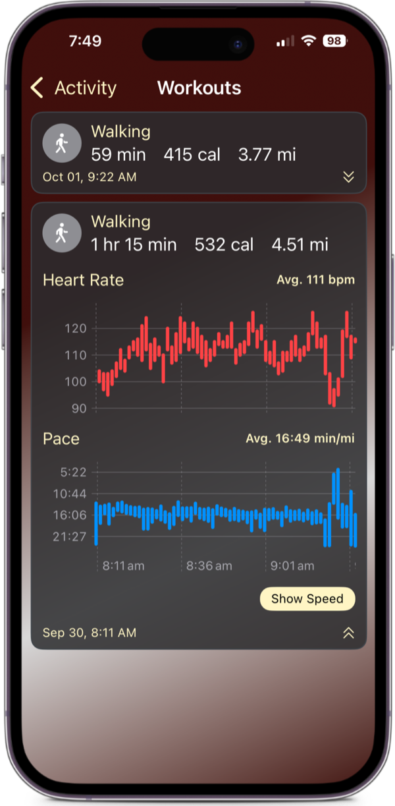
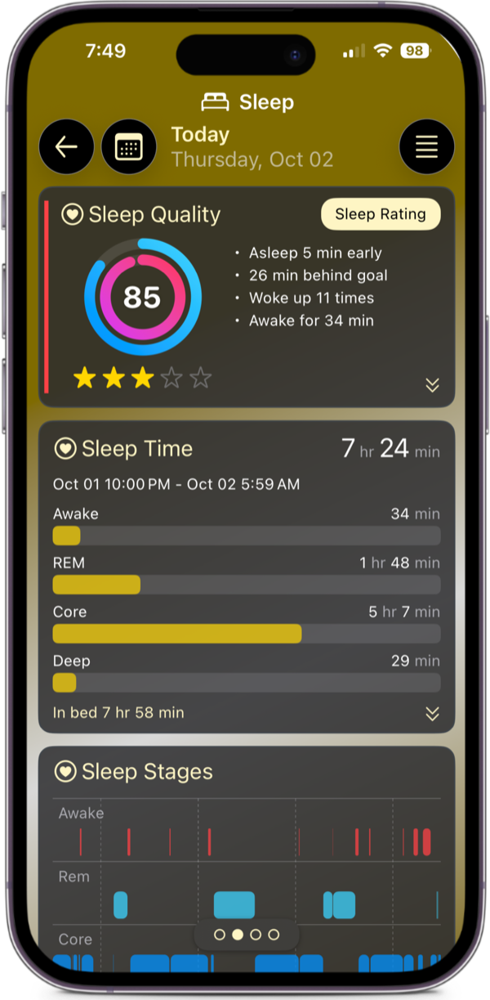
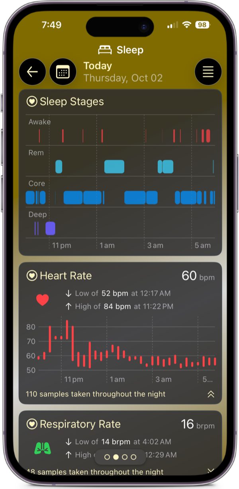
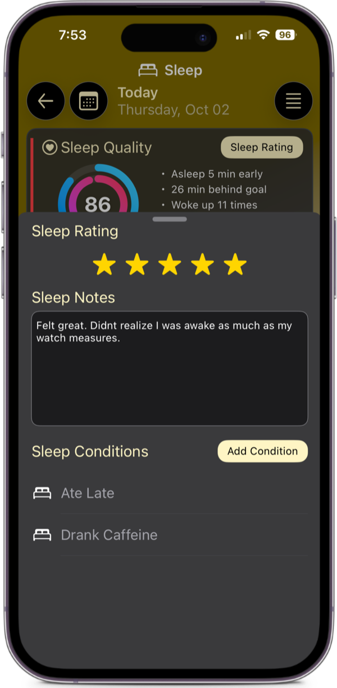
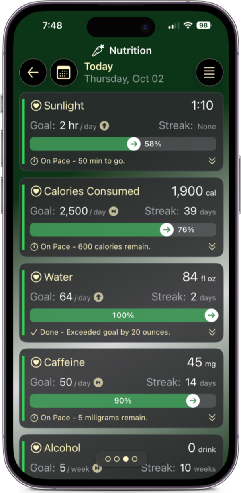
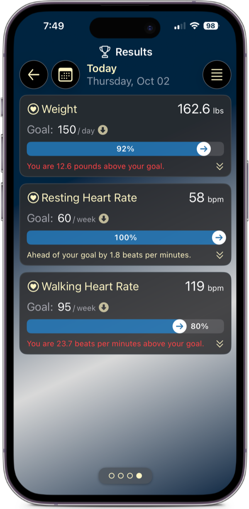
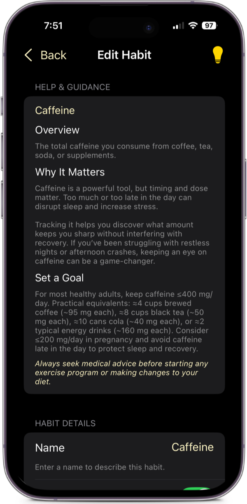
Download Now

The app is free to try — only purchase if you’re pleased with it.